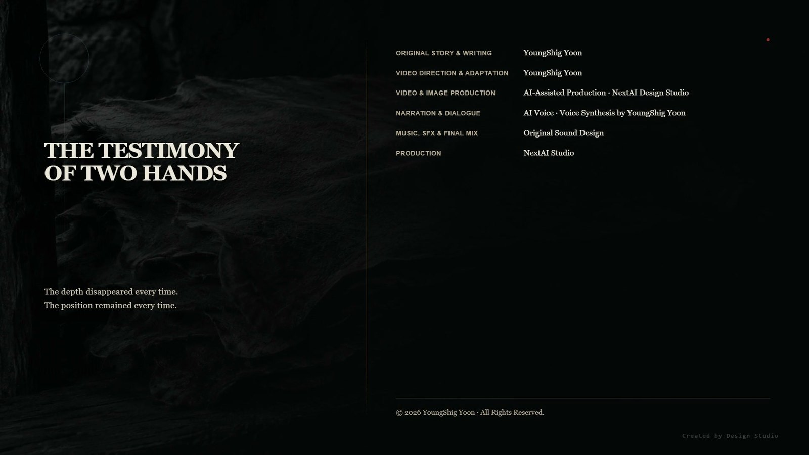

I. The Mark in the Sky
For four months, a circle opened in the sky.
It happened every night. Around midnight, one place in orbit hollowed into blackness, a cold rim formed around it, and a short while later it closed. It did not last long. By one person's count it lasted to twelve; by another's, to twenty.
Nothing happened.
By the fourth month, that became the most frightening thing of all.
Las knew what it was. The Rene were reestablishing Earth's reference. The alignment values across the planet had collapsed once last autumn because of one child, and they could not begin a second operation on a broken reference. So they had been measuring, a little at a time, every night.
When the measurement was complete, they would come.
He told no one.
He judged that the village could not endure it if he did. Enduring four months was not the same as enduring four months while knowing what would come at the end of them.
Later, that silence would count against him.
II. The Copied Wall
In four months, the way underground had grown wider.
At first, there had been only the trace Las left behind. Then the footprints multiplied, places appeared where human hands had touched the passage walls, and water jars and shoes accumulated at the entrance.
Ara and Las did not stop them. There was no way to stop them, and they knew that trying would only give people something more to talk about. For four months, both of them had kept their eyes on the sky.
Haram began to move the wall.
He was the man who kept the village records. At first, he mixed soot into a paste, rubbed it into cloth, and pressed the cloth against the wall. The lines emerged. But the density changed wherever he rubbed, so the same line came out differently twice.
Next, he soaked tanned hides in water and laid them against the wall. As the hides dried, they hardened into the shape of the grooves. When he peeled them away, what had been on the wall could be held in his hands.
This method always produced the same thing.
In four months, he had moved half the wall.
Joined together, the pieces became a wall. The lines occupied the same positions, the intervals were the same, and the intersections fell in the same places.
Only the depth was gone.
In Rene specification lines, depth is value. A shallow line and a deep line mean different things. A hardened hide preserves where a groove was, not how deep it was. Within the thickness of the hide, a shallow groove and a deep one become the same relief.
Haram did not know this. He had no way to know. Nowhere on the wall was it written that depth had to be read.
What he held in his hands was not the wall.
It was the wall with half of itself removed.
III. What Was Spread Out
The wall was round.
The outer alignment layer of the three-layer structure was a cylinder. When Las followed the axis last autumn, he had walked halfway around the wall.
Haram spread twenty-six hardened hides across the courtyard.
When something lifted from a curved surface is laid flat, edges remain. Haram cut away what remained at those edges and joined the pieces. It was careful work, and without it they would not fit together.
The moment they were joined, the line that had circled the wall became straight.
The axis acquired a direction.
Haram followed the line with his finger. It was the same motion Las had made underground last autumn. But Las had followed a round wall, and Haram followed a flat ground.
The line crossed the courtyard and ran north.
On the northern ridge was the place of the Chiwoo survivors. Two unworked stones stood there.
Haram stood for a long time.
He had also copied the six Rene storehouses above ground, the ones Las had built seventeen years earlier. The storehouse specification lines and the underground wall treated intersections in the same way. One line was broken to let the other pass, and the broken line was placed beneath.
The same hand.
That evening, one sentence traveled through the village.
They engraved it toward us.
In three days, it had reached the entire lower village. As the sentence passed from person to person, it grew shorter. As it grew shorter, it joined with the circle in the sky.
On the fifth day, it had become this.
They are calling the sky.
On the seventh day, it had become this.
They are erasing us.
No one had invented it. The wall pointed toward the ridge, the Chiwoo were on the ridge, and for four months a circle had opened in the sky every night. Three things were read as one.
All three were true.
IV. The Witness
On the eighth day, people came for Yunseo.
The story that the child had heard something in the wall remained. The story that a twelve-year-old had heard the words of the dead underground.
Haram: “All the child has to do is tell us what she heard.”
Yunseo: “What?”
Haram: “What they engraved.”
Yunseo: “That isn't what I heard.”
Haram: “Then what did you hear?”
Yunseo could not answer.
If she said there had been tens of thousands, Haram would choose one of them. The one he chose would become a sentence again. The child did not have words to explain it, but she knew that was what would happen.
Among the twenty things she had repeated last autumn, there had been three pairs that contradicted each other. Wait and do not wait. Run now and do not run. It is not too late and it is too late.
If she spoke only one, the other would become something that had never existed.
Haram: “You don't want to speak?”
Yunseo: “I can't choose.”
Haram: “I'm not asking you to choose. Just tell us what you heard.”
Yunseo: “If I tell it as I heard it, there are twenty.”
Haram: “Then tell us all twenty.”
Yunseo began the first one.
Yunseo: “The water is rising, so go upstairs.”
Haram raised a hand to stop her.
Haram: “That's enough. Tell us the one about us.”
The child closed her mouth.
Her younger sibling stood in the doorway and would not move. The child was six or seven and could not stop twenty adults. But the child knew that Yunseo had gone three days without sleep last autumn, and that those three days had come after she returned from underground.
The people did not take Yunseo that day. They only said they would return.
V. Two Refusals
On the tenth day, people gathered in the courtyard.
Ara and Las walked down. Twenty-six hardened hides covered the ground.
Haram: “This is yours.”
Las: “I didn't build it.”
Haram: “I didn't ask whether you built it. I asked whether your hand made this method.”
Las did not deny it.
Haram: “Give us the plans. We'll read what it means ourselves.”
Then he looked at Ara.
Haram: “And you will open the memory to us.”
The demands were reasonable. If they had nothing to hide, they only had to surrender two things: the plans and the memory. Then they could decide, there in the courtyard, whether the sentence that had circulated for seven days was true or false.
Ara looked around the courtyard. Half the people gathered there had shared water with them the previous winter. They were the people who had run south beside them on the night the mountain was cut away four months earlier.
Ara: “That memory isn't mine.”
Haram: “It's inside you.”
Ara: “Being inside me doesn't make it mine.”
What Ara carried inside her were the last sensations of people who had died on Maldek: the depth calculation of someone trapped in water, the direction of a hand pushing a child, the decision to say it was not too late while knowing that it was.
Ara: “If I open it, you'll choose one of them. That's what the wall did.”
Haram: “We would never do that.”
Ara: “The people who engraved that wall thought the same thing.”
All that time, Las had been looking at the hides.
The copying had been done well. The positions were exact and the intervals had not shifted. For four months, this man had very carefully lost half of the wall.
Las: “I can't give you the plans.”
Haram: “Does that mean you have something to hide?”
Las: “It means I know what you'll make with them.”
Haram: “We won't make anything. We'll only read.”
Las: “Once you learn how to read it, you learn how to engrave it.”
As he said it, Las understood what he was saying.
At nineteen, he had established the method of engraving. He had meant to make nothing. It had been for the gates.
Ara looked at him. There was one thing only the two of them knew: whose grammar had been used to engrave that wall, and what that fact would become if it were revealed in the courtyard.
Las did not speak. If he did, the people in the courtyard would see him as the owner of the wall. The owner of a wall refusing to surrender the plans would be read differently from someone with no connection to it refusing the plans.
Silence served him better.
He knew that too.
Someone in the courtyard asked about the sky. What was the circle that opened every night? Did he not even know that?
Las did not answer that either.
The two refusals did not persuade the courtyard. If there was nothing to hide, they could hand it over. That was what most of the people there believed, and it was not an unreasonable belief.
VI. The Alignment Core
On the night of the twelfth day, people went underground.
Haram led them, and twenty-two followed. They carried several torches.
Yunseo was among them.
The child had not asked to go. They had taken her because they believed she knew what the wall did.
Las descended behind them.
At the center of the three-layer structure was an alignment core. It was a low cylinder in the middle of the arrival layer.
Haram believed it was a weapon. Because the axis pointed toward the ridge, he believed something would travel along it. He believed they should use it first.
The alignment core was not a weapon.
It was a device that carried the load of the three-layer structure. The outer alignment layer fixed direction, the middle load-bearing layer carried the weight, and the inner arrival layer remained empty. The arrival layer being empty was a condition of the structure's calculation. If there was mass inside it, the load calculation lost its conditions.
There were now twenty-three people standing in the arrival layer. When Las entered from the passage, there would be twenty-four.
If activated, the structure would try to reestablish its reference. If it tried to seize a reference it could not establish, the structure would tighten itself. The ceiling would descend.
It took Haram a long time to open the cylinder's cover. Rene locks opened through sequence, not force, and he did not know the sequence. In the end, he pried open a seam in its side with a chisel.
When the seam opened with a sound, Las knew that everyone in that place was about to die.
He could explain.
He could say that this was not a weapon but a load-bearing device, and that if they activated it here, the ceiling would descend.
They would not believe him. Not because they were incapable of belief, but because what his words would mean in this place had already been decided. A man who said it was not a weapon was a man trying to protect one.
Las said nothing.
Haram took hold of the handle.
The alignment core's axis lay inside the cylinder. To enter a value, someone had to put a hand through the opened seam, and that placed the hand where the load would fall.
Las put in his left hand.
His fingertips found the axis. It was the same motion he had used to read the wall last autumn. Then, the value had entered him. This time, the value went out.
0.4 degrees.
The value he had read from the wall last autumn. The value he had entered on Maldek seventeen years earlier.
The alignment core turned.
Maldek's penetrator would fire even when the value was wrong. An attack system went forward while accepting error. An alignment core was the opposite. Because its purpose was to protect the structure, its design was not to operate when the reference did not match.
The cylinder sounded once and stopped.
At the same moment, the seam closed.
Las made no sound. It took time to pull his hand free.
Haram: “It's broken.”
Las: “It seems so.”
Haram touched the cylinder twice more. He pulled the handle and let it go. Nothing moved.
He looked disappointed.
Las studied that face for a long time. The man did not know that he had not died that night. He would never know. He did not know that for four months he had carefully lost half the wall, or that he had stood beneath the ceiling with twenty-two people from the village.
It was better not to know.
The people went back up. As they climbed, someone said that the others must have broken it beforehand. Several people nodded.
Yunseo remained where she was.
In the darkness, the child had seen nothing. But while Las's hand was inside the cylinder, she felt what had passed through that place. It was the same kind of thing she had felt before the wall four months earlier.
Only the child knew.
VII. The Marks That Remained
On the morning of the thirteenth day, the circle opened in the sky again.
It opened in daylight. For the first time in four months, the entire village saw it.
It meant the measurement was nearly complete. Las did not tell them that either.
Ara went to the courtyard. She stood at the edge without stepping onto the hides and said only one thing.
Ara: “What you're afraid of isn't us.”
Haram: “Then what is it?”
Ara: “That on the night the mountain was cut away four months ago, not one of you knew which way to run.”
Haram did not answer.
He did not gather up the hides. He left them in the courtyard. The people did not disperse either. The sentence continued to circulate that evening, and the day after.
The fear did not subside.
There was no reason it should. The sky was still opening, and the two of them still surrendered nothing.
Yunseo came into the courtyard.
The child could speak.
All she had to do was tell them what Las had done underground the night before. There had been twenty-four people in that place, and only one of them knew. If she spoke, the two species would become the ones who had saved the village, and the sentence that had circulated for seven days would collapse where it stood.
The child stood at the edge of the courtyard and looked at the people.
If she spoke, she would become a witness.
Once she became a witness, she would be a witness again. Next they would ask about the twenty things she had heard underground, and once again Haram would raise his hand to stop her. That's enough. Tell us the one about us.
Yunseo looked at Ara. Ara did not look back. She knew what the child was weighing, and still she did not look.
Las was not in the courtyard. He could not use his left hand, and if he showed it to the people, they would ask what he had done the night before.
The child turned away.
At home, she took out the piece of bark. The previous autumn, she had pressed it twice with a fingernail. One mark, then another after turning slightly away.
She looked at it for a long time, then folded it again and tucked it inside her clothes.
If she showed it, someone would copy that too. And in the copying, the angle between the two marks would disappear. A hardened hide preserves position, not depth.
That year, the village failed to drive the two species away, and the two species failed to persuade the village.
Haram's hides entered the village archive. A note said they would be taken out again when someone found a way to transfer depth.
That way was never found.
The hides in the archive remained for a long time. When the village moved, the hides moved with it. The next generation transferred them onto what they called paper, and the generation after that transferred them again.
Each time, they took an impression.
The depth disappeared every time. The position remained every time.
